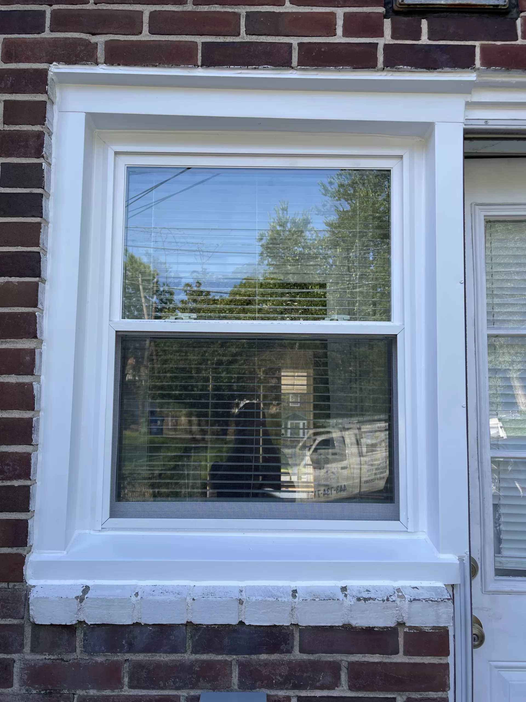

Preparing a room for window installation mostly means clearing space around each window, protecting nearby belongings, and planning how the household will manage noise, dust and temporary access limits for the day. Installers need a clear working area inside and outside each window opening, so the bulk of homeowner preparation happens before the crew arrives rather than during the work itself. Thinking through furniture, window treatments, flooring protection and household routines in advance helps the installation day move smoothly and reduces last-minute surprises for everyone involved.
This checklist focuses on what a homeowner can reasonably do from inside the home: clearing, covering, and coordinating. It does not cover technical installation steps, which are the installer's responsibility, and it does not address structural or frame conditions that should be discussed separately with whoever is handling the project.

Clear and protect the work area around each window
Start by removing furniture, lamps, plants and decorative items from the immediate area in front of and below each window scheduled for replacement. A few feet of clearance on the interior side gives installers room to remove the old window and maneuver the new unit without navigating around furniture or breakable items.
Confirm who will remove and reinstall curtains, blinds, shades, rods and brackets, and whether that work is included in the installation scope. Handle only lightweight items that are reachable from stable floor level; arrange help for heavy furniture, high fittings or anything requiring a ladder. Label removed treatments by room and window so they can be matched later. Ask about the final dimensions and mounting space before assuming custom treatments will fit the new unit.
Agree with the installer on floor protection suited to the existing finish and the crew's access route. Ask who supplies and secures protective coverings, and keep doorways and walkways free of loose sheets or stored items. Move lightweight rugs if practical, or arrange assistance. Discuss dust containment and cleanup before removal begins so responsibility for protecting nearby rooms and furnishings is clear.
For rooms with wall-mounted electronics, artwork, or shelving near the window, consider temporarily relocating these items if they sit within a few feet of the opening. Vibration from removal and installation work can occasionally dislodge items that are not securely anchored.
Plan household routines and access for installation day
Decide in advance which rooms will be unavailable during parts of the day, since installers typically work through one window or room at a time rather than opening the entire home at once. If the project includes several windows across different rooms, ask how the crew plans to sequence the work so the household can plan around specific rooms being inaccessible for periods of time.
Plan for pets and children to be kept in a separate, closed-off area of the home away from active work zones. Open window openings, tools, and foot traffic in and out of the house create hazards that are easier to manage by keeping pets and young children in another part of the home entirely, rather than trying to supervise them near the work area.
Confirm interior and exterior access routes with whoever is coordinating the project, including which doors the crew will use, where materials and equipment will be staged outside, and whether a driveway or portion of the yard needs to remain clear. This is similar to the kind of access planning described for roofing projects, and the same logic applies to window work: clear paths reduce delays and protect landscaping near the work area.
Finally, expect some temporary disruption to climate control and noise levels while windows are being replaced, since openings are exposed to outside air during the swap. Planning indoor activities around these gaps, and keeping pathways through the home clear of boxes or stored items pulled from the work area, helps the day go smoothly for everyone in the household.
Questions this guide answers
How far in advance should a room be cleared before window installation?
Clearing furniture, window treatments and nearby breakables is best done the day before or the morning of installation so the work area is ready when the crew arrives. This avoids delays caused by last-minute clearing and gives time to protect flooring with drop cloths in the work zone.
Do pets and children need to stay out of the house during window installation?
They do not need to leave the house entirely, but they should be kept in a separate, closed-off room away from active work areas for safety. Open window openings, tools and foot traffic create hazards that are easier to manage with pets and children at a distance from the work zone.
Will existing curtains and blinds fit after the new windows are installed?
Either installation approach can change the available mounting space, trim or clear opening. Ask the installer to confirm the finished dimensions and mounting details before assuming existing curtains or blinds will fit. Keep the treatments labeled by room, and agree on who will reinstall them after the window work.